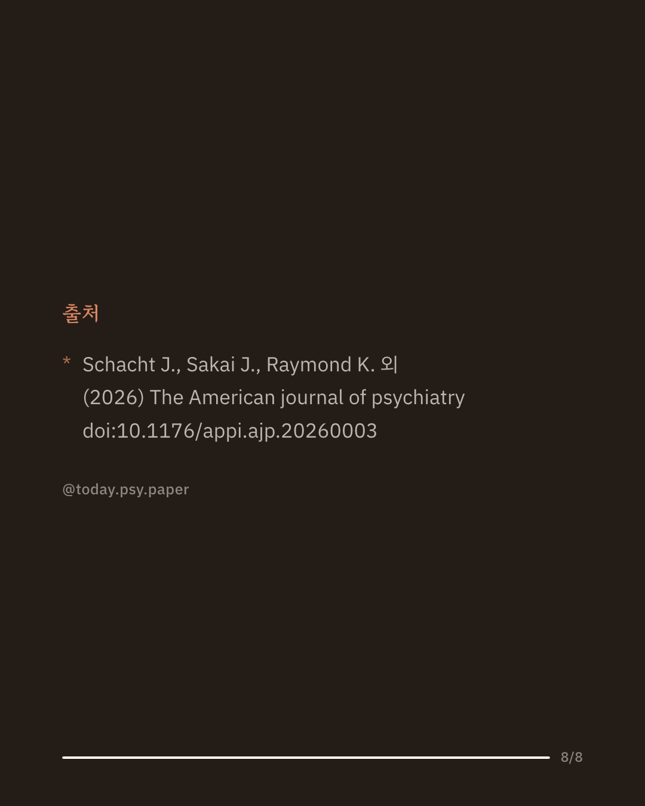

비만·당뇨 치료제로 알려진 세마글루타이드(GLP-1 수용체 작용제)가 음주와 알코올 사용 장애에도 도움이 될 수 있다는 관찰·동물 연구가 쌓여 왔습니다. 다만 치료를 원하는 더 중증인 환자를 대상으로 한 임상시험 근거는 부족했습니다. 연구진은 중등도 이상 알코올 사용 장애 성인 50명을 세마글루타이드(4주간 3mg 뒤 4주간 7mg)와 위약으로 나눠 8주간 이중맹검으로 비교했습니다. 1차 지표였던 6주차 실험실 음주 단서 갈망과 하루 음주량에서는 위약과 유의한 차이가 없었습니다. 반면 폭음일수, 음주일 1일 음주량, 일상 속 음주 갈망, 음주 관련 문제, 대마 사용일은 위약보다 유의하게 줄었고, WHO 위험 음주 수준이 한 단계 이상 낮아진 참가자도 더 많았습니다. 연구진은 이 결과가 경증·비치료군에서 나온 기존 연구와 일관되며, 알코올 사용 장애 치료제로서 세마글루타이드 개발을 이어갈 근거가 된다고 보았습니다. 다만 참가자가 50명에 불과하고 투여 기간이 8주로 짧으며 1차 지표에서는 효과가 확인되지 않았습니다. 단일 연구이므로 확대 해석은 조심해야 합니다. 출처: The American Journal of Psychiatry (2026), Oral Semaglutide for Alcohol Use Disorder: A Randomized Clinical Trial. #알코올사용장애 #중독치료 #정신의학연구 #세마글루타이드 #논문리뷰
python3 publish.py 42522065